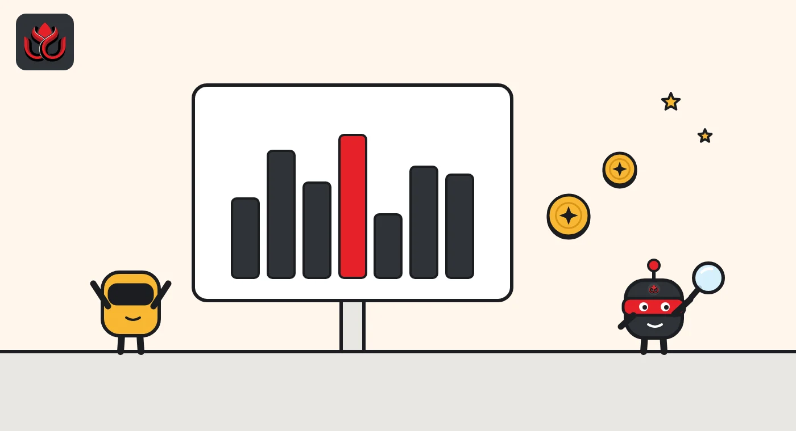
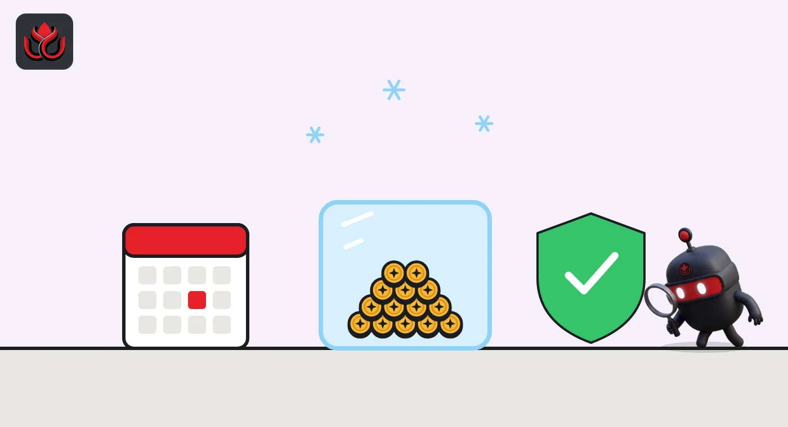

Borrow dollars against Nvidia stock, even on a Sunday: Aave's first month, $5.2M lent
Aave V4 on Base now takes seven Coinbase tokenized tech stocks as collateral for USDC loans. A month in, $11.5 million of stock is deposited, ten tiny liquidations have hit, and there is no bad debt. US users are shut out.
Key points
- Since September 25, 2026, non-US users can borrow USDC on Aave V4 (Base) against seven Coinbase tokenized stocks, including Nvidia and Tesla.
- Month one: about $11.5 million of stock collateral, $5.2 million of USDC borrowed, 729 users, ten liquidations worth $1,687 and no bad debt.
- Stock prices freeze over weekends, META's 10% earnings drop caused no liquidations, and demand already pushed Aave to lift the GOOGLc cap.
What Aave launched
On September 25, 2026, Aave opened a market where users deposit tokenized shares of seven big US tech companies and borrow USDC, a dollar stablecoin, against them. It runs on Aave V4, the new version of the lending protocol, on Coinbase's Base network. A month later, $5.2 million of USDC was on loan.
The Aave announcement lists seven accepted tokens: AAPLc, AMZNc, GOOGLc, METAc, MSFTc, NVDAc and TSLAc. They track Apple, Amazon, Alphabet, Meta, Microsoft, Nvidia and Tesla. Lenders who supply USDC earn interest from borrowers.
The pitch is simple. US stock exchanges close at night and on weekends. The Aave market never closes, so a tokenized share sitting idle in a wallet can back a dollar loan at any hour.
Who holds the real shares
Each token is a certificate issued by Coinbase Onchain SPV Ltd. The real shares sit with Alpaca Securities, an SEC-registered broker-dealer, in segregated accounts. Aave's post says the custodian may not lend the shares, use them for its own account or hold a lien over them. The issuer holds them as bare trustee, meaning it holds them only on behalf of token holders.
Coinbase offers the tokens under Regulation S. That means only eligible non-US persons in permitted countries can buy them, which is why US users cannot use the market. Aave also notes that Base itself does not issue, sell or custody these securities.
At launch the stocks are collateral only. Users cannot borrow them, and they cannot borrow one stock against another. Aave says more Coinbase tokenized stocks may be added, and GHO, Aave's own stablecoin, may become borrowable. Each step needs governance and risk review.

How Aave limits the risk
All seven stocks sit in one Equities Hub with a single USDC reserve and one lending spoke. In Aave V4's design, a hub holds the money and a spoke sets the lending rules. Each stock gets its own collateral factor, the share of its value you can borrow. Aave's post does not publish those factors.
Prices come from Chainlink's tokenized equity feeds, which publish from 8:00 p.m. ET on Sunday to 8:00 p.m. ET on Friday. Over weekends and US holidays the feeds hold the last price. Aave says that in those windows a position's health can only worsen through interest building up, not through price moves.
Dividends are reinvested rather than paid out. Each token carries a multiplier that starts at 1.0 and only changes on corporate actions. During a stock split, that reserve pauses until the new multiplier is applied.
The first month in numbers
LlamaRisk, Aave's risk provider, published a first-month review on its official X account on October 26. By then the market held about $11.5 million of stock collateral backing $5.2 million of USDC debt. Some 729 addresses had used it, and 321 had borrowed.
Three stocks dominate. GOOGL made up 34% of collateral, NVDA 27% and META 17%. About $6.3 million of USDC was supplied, with 82% lent out. Borrowing cost averaged 1.9% a year and rose to about 3.7% by October 25. LlamaRisk said no launch risk parameter had to change.
Timing tells a story. Some 59% of borrow transactions came outside regular US trading hours, but 78% of the dollars were borrowed while markets were open. Small loans arrive around the clock. Large ones arrive during the session.
Aave Equities Hub after one month
US$ million
Source: LlamaRisk, Aave's First Month of Tokenized Stocks (October 26, 2026)

Weekend gaps, earnings and liquidations
The weekend price freeze was the design choice most people worried about. LlamaRisk reported that no feed updated during any of the five closed windows. All seven feeds resumed within 55 seconds of the Sunday reopen, and every first print landed within 1.3% of Friday's last price.
Earnings were a real test. META fell almost 10% after its third-quarter results on October 21 and ended the month 17% below its launch price. No META-backed position was liquidated. Dividends from META and NVDA lifted the token multipliers slightly with no break in the feeds.
Liquidations so far are tiny. Ten liquidations repaid $1,687 of debt, and there was no bad debt. All 198 positions with debt sat above a health factor of 1.0, the line below which a loan can be liquidated.
Demand is now pushing on some limits. On October 29 an Aave risk steward proposal raised the GOOGLc supply cap from 15,000 to 25,000 tokens, after about 12,357 GOOGLc had been supplied.
Timeline
Equities Hub with seven Coinbase tokenized stocks goes live on Aave V4 on Base
USDC borrow incentives end
Stock supply incentives run
META reports results and falls almost 10%; no META-backed liquidations
LlamaRisk publishes first-month review
Risk stewards raise the GOOGLc supply cap to 25,000 tokens
LC Insight analysis
This section is our reading of the facts above, not a statement of fact.
- We think $5 million of loans is a pilot, not a market. Aave and LlamaRisk are clearly testing how tokenized stocks behave before letting real size in, and the slow cap rises show it.
- The weekend gap is the risk that has not been tested yet. Five calm Sunday reopens prove the plumbing works. One big Monday gap after bad news would trigger many liquidations at once, and that day will decide how fast caps grow.
- If it holds up, USDC lenders on Base get borrowers whose demand does not depend on crypto prices. That would make some DeFi yields less tied to the crypto cycle, which is the real prize here.
What's next
- Further cap increases through the Aave risk steward process
- Addition of more Coinbase tokenized stocks and GHO borrowing
- The first large liquidations after a weekend or earnings price gap
Disclaimer. This article is based on public information and the sources listed below as of the update time shown. It is for information only and is not investment, legal or tax advice. Figures may change as companies and authorities publish new data.